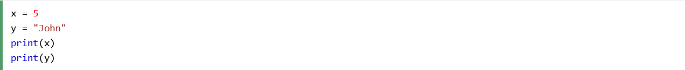
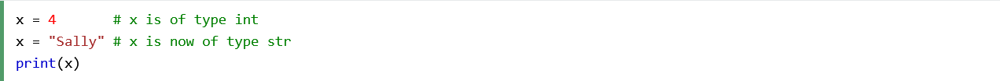
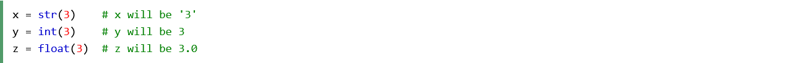
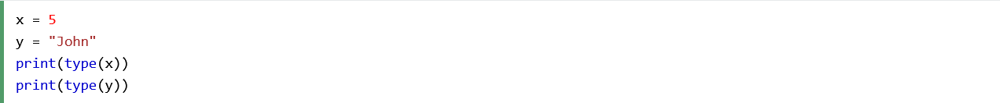
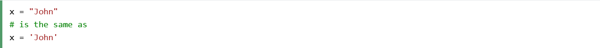
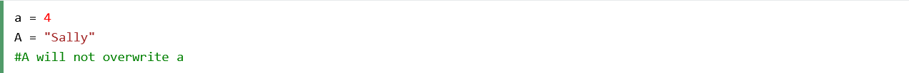
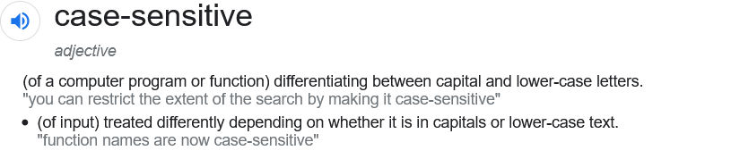

Python Variables
You are currently on the "Python Variables" section of the website.
If you wish to return to the Home Page, you need to click on "Ten Things to Know About Discovering Python: A Beginner's Guide" or simply click here.
Variables are containers for storing data values.
Python has no command for declaring a variable.
A variable is created the moment you first assign a value to it.
Variables do not need to be declared with any particular type, and can even change type after they have been set.
If you want to specify the data type of a variable, you can do so with this.
You can get the data type of a variable with the type() function.
String variables can be declared either by using single or double quotes:
Variable names are case-sensitive.
Comment: According to the Oxford Languages dictionary, the adjective "case sensitive" can mean, in the context of a computer program or function, being able to differentiate between upper and lower case.
